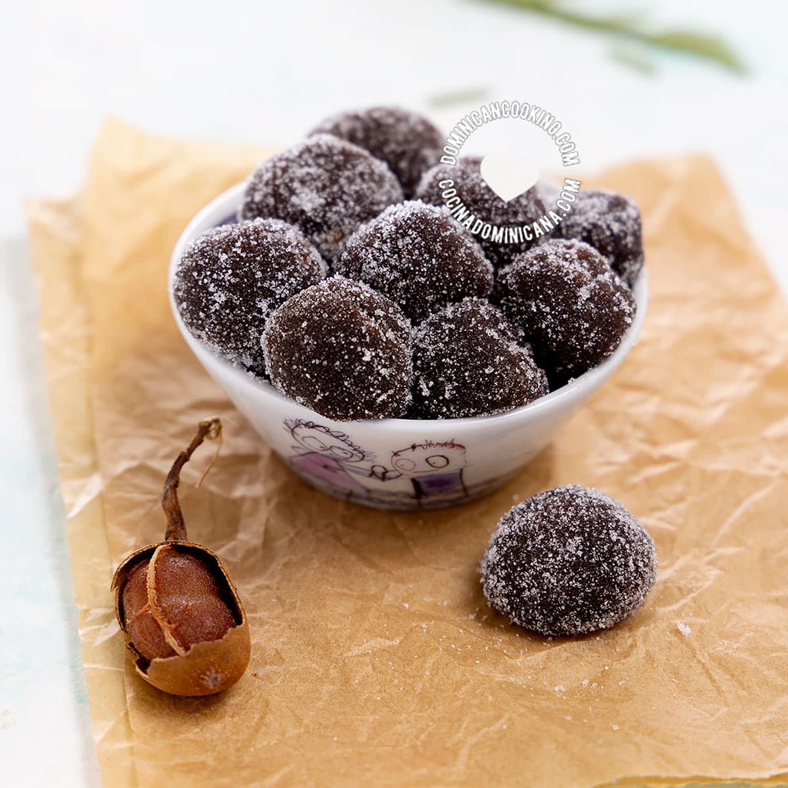
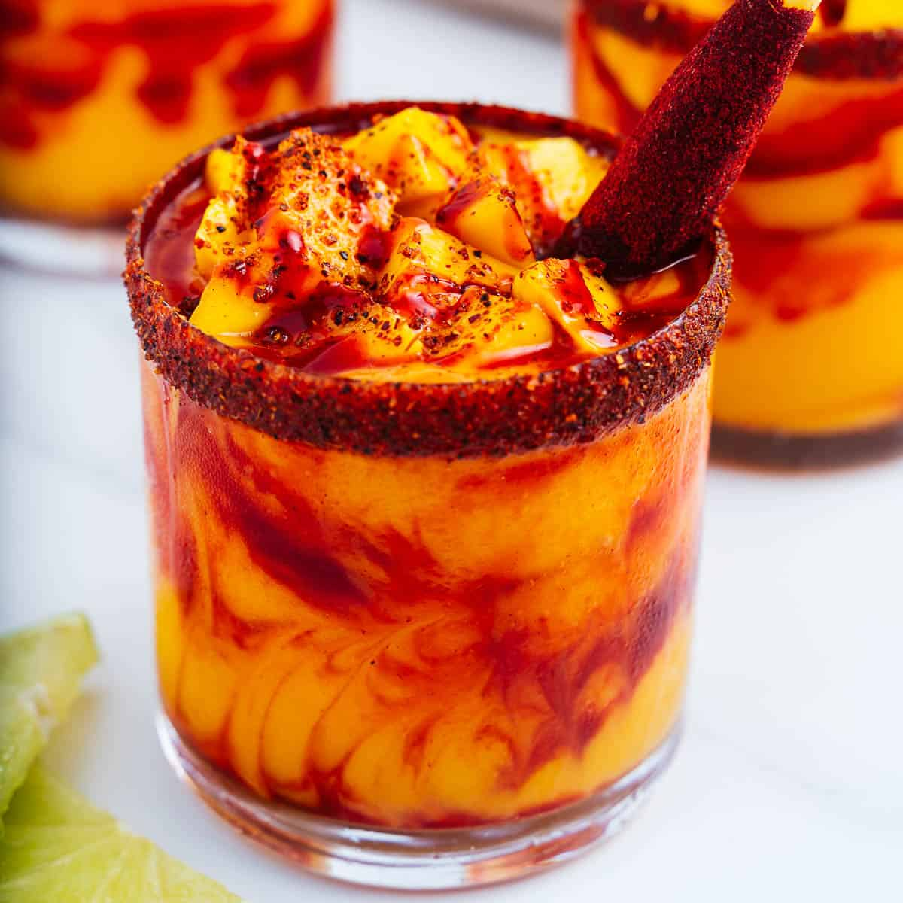
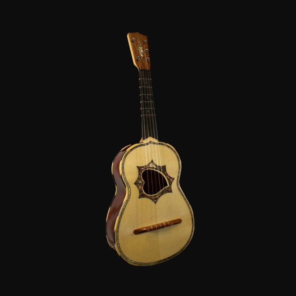

Isla Mujeres is a Mexican island in the Caribbean Sea, 13 kilometers off the coast from Cancún.

Tamarind is a leguminous tree bearing edible fruit that is indigenous to tropical Africa and naturalized in Asia.

Isla Mujeres is a Mexican island in the Caribbean Sea, 13 kilometers off the coast from Cancún.
Mangonada is a frozen mango treat with an infusion of bold flavors – it’s sweet, tangy, spicy, & delicious!! It’s Mexico’s favorite treat and you’ll love it too!

The vihuela is a 15th-century fretted plucked Spanish string instrument, shaped like a guitar but tuned like a lute.
